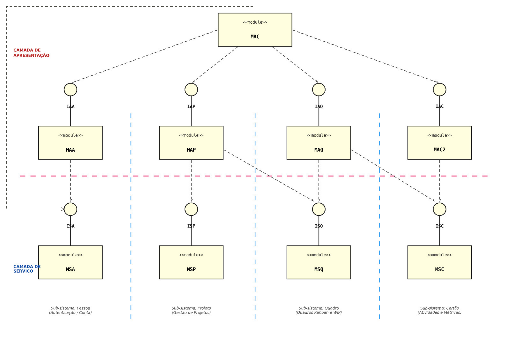

| Arthur Vieira | Gabriel Sales | Isabela Honda Ferreira | João Roberto Machado |
O sistema de software tem o propósito de prover suporte à gestão de projetos pelo método Kanban. Em cada projeto gerenciado, os fluxos de trabalho são organizados em quadros compostos por três colunas estritas: A FAZER, FAZENDO e FEITO. O sistema suporta dois papéis de usuário com privilégios diferenciados: GESTOR (responsável pela criação de projetos, quadros e cartões) e DESENVOLVEDOR (responsável pela execução e movimentação das atividades atribuídas).
O sistema adota o estilo de arquitetura em duas camadas: Apresentação e Serviço. A camada de apresentação realiza a interação com o usuário, valida os dados de entrada e solicita operações por meio de interfaces abstratas. A camada de serviço aplica as regras de negócio, verifica permissões, preserva os relacionamentos entre as entidades e utiliza contêineres para armazenar os dados em memória. As classes de domínio e entidade representam os dados utilizados pelas duas camadas.
O diagrama a seguir especifica os módulos do sistema, as interfaces abstratas e as dependências entre os componentes.

O diagrama de entidades define as quatro classes fundamentais de dados do sistema, seus atributos tipados por classes de domínio, e os vínculos associativos e multiplicidades obrigatórias:
A arquitetura possui nove módulos, distribuídos entre as camadas de apresentação e serviço. As siglas abaixo correspondem aos módulos e às interfaces identificados no diagrama de arquitetura.
Implementado por CntrApresentacaoPrincipal, coordena o
menu inicial, o acesso à sessão autenticada e a navegação entre os
subsistemas. Solicita operações às interfaces de apresentação
IAA, IAP, IAQ e IAC. Também depende de ISA
(IServicoPessoa) para consultar os dados e o papel
atual do usuário autenticado.
Implementado por CntrApresentacaoPessoa, fornece
IAA (IApresentacaoPessoa). Realiza a interação
relacionada ao cadastro, à autenticação e ao gerenciamento de
pessoas. Coleta e valida os dados de entrada, solicita as operações
por meio de ISA (IServicoPessoa) e apresenta seus resultados.
Implementado por CntrApresentacaoProjeto, fornece
IAP (IApresentacaoProjeto). Apresenta as operações
de criação, leitura, atualização, exclusão e listagem de projetos,
utilizando ISP (IServicoProjeto).
Também depende de ISQ (IServicoQuadro) para listar
os quadros de um projeto por meio de listarPorProjeto,
concretizando a dependência diagonal MAP → ISQ.
Implementado por CntrApresentacaoQuadro, fornece
IAQ (IApresentacaoQuadro). Apresenta as operações
de criação, leitura, atualização, exclusão e listagem de quadros,
utilizando ISQ (IServicoQuadro).
Também depende de ISC (IServicoCartaoDeAtividade)
para listar os cartões de um quadro, concretizando a dependência
diagonal MAQ → ISC.
Implementado por CntrApresentacaoCartao, fornece
IAC (IApresentacaoCartao). Realiza a interação
relacionada ao gerenciamento e à movimentação de cartões, além
da consulta de métricas. Coleta e valida os dados de entrada,
solicita as operações por meio de ISC
(IServicoCartaoDeAtividade) e apresenta seus resultados.
Implementado por CntrServicoPessoa, fornece
ISA (IServicoPessoa). Executa os serviços de
cadastro, autenticação, leitura, atualização, exclusão e listagem
de pessoas. Restringe a atualização e a exclusão de uma conta
ao próprio usuário e verifica os vínculos com projetos e cartões
antes da exclusão. Utiliza os contêineres de pessoas, projetos e cartões.
Implementado por CntrServicoProjeto, fornece
ISP (IServicoProjeto). Executa as operações
relacionadas aos projetos, verifica o papel e as permissões
do usuário e mantém o vínculo entre projeto e gestor.
Impede a exclusão de projetos que possuem quadros.
Utiliza os contêineres de pessoas, projetos e quadros.
Implementado por CntrServicoQuadro, fornece
ISQ (IServicoQuadro). Executa as operações
relacionadas aos quadros, incluindo sua listagem por projeto.
Verifica permissões, mantém o vínculo com o projeto e impede
a exclusão de quadros que possuem cartões. Também impede
a redução do limite abaixo do WIP atual.
Utiliza os contêineres de pessoas, projetos, quadros e cartões.
Implementado por CntrServicoCartaoDeAtividade,
fornece ISC (IServicoCartaoDeAtividade).
Executa as operações relacionadas aos cartões, verifica permissões
e mantém seus vínculos com quadros e desenvolvedores.
Controla as transições A FAZER → FAZENDO e FAZENDO → FEITO,
a ordem cronológica dos registros de tempo e o limite de WIP.
Calcula tempo de ciclo, lead time, suas médias por quadro e WIP.
Utiliza os contêineres de pessoas, projetos, quadros e cartões.
As oito interfaces abstratas são declaradas em
Headers/interfaces.hpp.
As interfaces de apresentação definem os contratos utilizados
por MAC para acessar os demais módulos de apresentação.
As interfaces de serviço definem os contratos utilizados
para solicitar operações à camada de serviço.
As classes ContainerPessoas,
ContainerProjetos, ContainerQuadros
e ContainerCartoes implementam o armazenamento
em memória utilizado pelos módulos de serviço.
Garantem a unicidade das chaves e armazenam os vínculos
entre as entidades. Suas instâncias são criadas no
main.cpp e compartilhadas entre as controladoras
de serviço por referência.
As entidades Pessoa, Projeto, Quadro e CartaoDeAtividade
representam os dados do sistema e possuem atributos
compostos por classes de domínio. Os domínios validam
formatos e valores por meio de seus métodos de atribuição,
lançando std::invalid_argument quando recebem
valores inválidos.
| ID | Serviço | Entidade | Papéis com Direito | Interface / Método Declarado |
|---|---|---|---|---|
| 1 | CRIAR | PESSOA | GESTOR, DESENVOLVEDOR | IServicoPessoa::criar |
| 2 | LER | PESSOA | GESTOR, DESENVOLVEDOR | IServicoPessoa::ler |
| 3 | ATUALIZAR | PESSOA | GESTOR, DESENVOLVEDOR | IServicoPessoa::atualizar |
| 4 | EXCLUIR | PESSOA | GESTOR, DESENVOLVEDOR | IServicoPessoa::excluir |
| 5 | LISTAR | PESSOA | GESTOR, DESENVOLVEDOR | IServicoPessoa::listar |
| 6 | CRIAR | PROJETO | GESTOR | IServicoProjeto::criar |
| 7 | LER | PROJETO | GESTOR, DESENVOLVEDOR | IServicoProjeto::ler |
| 8 | ATUALIZAR | PROJETO | GESTOR | IServicoProjeto::atualizar |
| 9 | EXCLUIR | PROJETO | GESTOR | IServicoProjeto::excluir |
| 10 | LISTAR | PROJETO | GESTOR, DESENVOLVEDOR | IServicoProjeto::listar |
| 11 | CRIAR | QUADRO | GESTOR | IServicoQuadro::criar |
| 12 | LER | QUADRO | GESTOR, DESENVOLVEDOR | IServicoQuadro::ler |
| 13 | ATUALIZAR | QUADRO | GESTOR | IServicoQuadro::atualizar |
| 14 | EXCLUIR | QUADRO | GESTOR | IServicoQuadro::excluir |
| 15 | LISTAR | QUADRO | GESTOR, DESENVOLVEDOR | IServicoQuadro::listar |
| 16 | CRIAR | CARTÃO DE ATIVIDADE | GESTOR | IServicoCartaoDeAtividade::criar |
| 17 | LER | CARTÃO DE ATIVIDADE | GESTOR, DESENVOLVEDOR | IServicoCartaoDeAtividade::ler |
| 18 | ATUALIZAR | CARTÃO DE ATIVIDADE | GESTOR | IServicoCartaoDeAtividade::atualizar |
| 19 | EXCLUIR | CARTÃO DE ATIVIDADE | GESTOR | IServicoCartaoDeAtividade::excluir |
| 20 | LISTAR | CARTÃO DE ATIVIDADE | GESTOR, DESENVOLVEDOR | IServicoCartaoDeAtividade::listar |
| 21 | MOVER | CARTÃO DE ATIVIDADE | GESTOR, DESENVOLVEDOR | IServicoCartaoDeAtividade::mover |
| 22 | LER TEMPO DE CICLO | CARTÃO DE ATIVIDADE | GESTOR, DESENVOLVEDOR | IServicoCartaoDeAtividade::lerTempoCiclo |
| 23 | LER TEMPO DE CICLO MÉDIO | CARTÃO DE ATIVIDADE | GESTOR, DESENVOLVEDOR | IServicoCartaoDeAtividade::lerTempoCicloMedio |
| 24 | LER LEAD TIME | CARTÃO DE ATIVIDADE | GESTOR, DESENVOLVEDOR | IServicoCartaoDeAtividade::lerLeadTime |
| 25 | LER LEAD TIME MÉDIO | CARTÃO DE ATIVIDADE | GESTOR, DESENVOLVEDOR | IServicoCartaoDeAtividade::lerLeadTimeMedio |
| 26 | LER WIP | CARTÃO DE ATIVIDADE | GESTOR, DESENVOLVEDOR | IServicoCartaoDeAtividade::lerWIP |